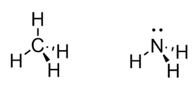
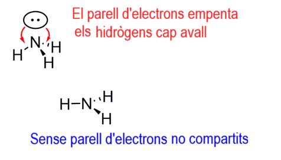

Text
Per a la geometria electrònica, tractem els àtoms i electrons per igual. Les dues molècules corresponents al metà \(CH_3\) i l'amoníac \(NH_3\) són gairebé idèntiques.
\(CH_4\rightarrow\) Ne(C)=4 àtoms+ 0 parells d'electrons no compartits= 4.
\(NH_3\rightarrow\) Ne(N)=3 àtoms+ 1 parell d'electrons no compartits= 4.

Geometria tetraèdrica
Tanmateix, les seves geometries moleculars són diferents. Per al metà \(CH_4\), tenim una geometria tetraèdrica i per a l'amoníac \(NH_3\), la geometria és piramide- trigonal. El parell solitari sobre el nitrogen és important i si no hi fos, tindríem una molècula hipotètica amb una geometria plano-triangular:

Per què ignorem el parell solitari per anomenar la geometria molecular? Una manera de veure-ho és el fet que els electrons són infinitament més petits i lleugers que els nuclis i quan mirem els microscopis moderns, no els veiem.
Utilitzeu aquesta taula per determinar la geometria electrònica i molecular, per a totes les combinacions d'àtoms i parells solitaris: